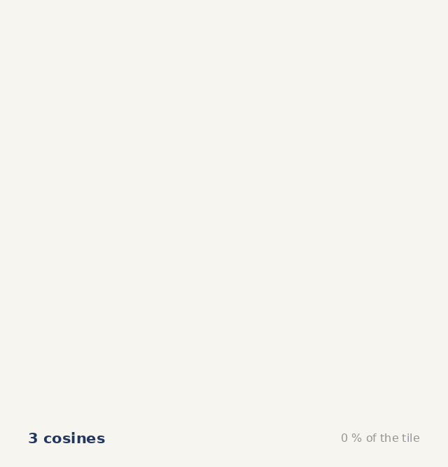
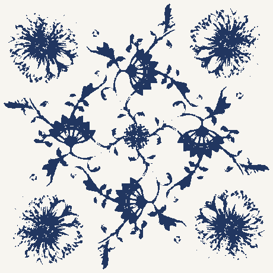

How many cosines does it take to draw one painted tile?
It sounds like the opening of a joke. It has an answer.


62 815 cosines for 99 % agreement · 32 551 for 95 % · 16 975 for 90 %
The symmetry, measured before anything else
Correlate the tile with itself under each symmetry of the square.
| rotation | mirror | ||
|---|---|---|---|
| 90° | +0.536 | vertical | +0.158 |
| 180° | +0.480 | horizontal | +0.189 |
| 270° | +0.536 | diagonal | +0.169 |
| shifted 37 px | +0.120 | antidiagonal | +0.190 |
| shuffled | −0.002 |
Mirrors sit at the level of a meaningless shift. The group is p4: four‑fold rotation, no reflections.
The equation
blue where f(x, y) > ½ The bracket is unchanged by a quarter turn. That is all p4 means.
Put the origin on the four-fold centre and C4 forces every amn real, so no sine terms exist. Largest imaginary part found in the whole spectrum: 2.6 × 10−17.

Now turn one of the coefficients
p4 has no mirrors, so (m, n) and (n, m) are different orbits and need not carry the same coefficient. Making them equal is the transpose, so the knob is one line:


t = 1.00 · χ = 0.199 — this is the tile
The plant turns into a snowflake. Things that grow are chiral — a tendril winds one way, a shell one way. Things that crystallise have mirrors. χ measures how far from mirrors this pattern sits.
χ is defined on the coefficients, so it is worth checking that it shows up in the picture. Correlating each rendered tile against its own mirror:
| t | χ | mirror corr. | rot 90° corr. |
|---|---|---|---|
| 0.00 | 0.000 | 1.000 | 1.000 |
| 0.25 | 0.014 | 0.393 | 1.000 |
| 1.00 | 0.199 | 0.254 | 1.000 |
| 1.50 | 0.399 | 0.237 | 1.000 |
At t = 0 the mirror correlation is exactly 1, so χ = 0 really is p4m and not merely a statement about coefficients. The quarter-turn correlation stays at 1 throughout: the knob never breaks p4.
But χ saturates, and the picture saturates sooner. Nearly all of the handedness appears in the first fifth of the slider — t = 0 → 0.25 takes the mirror correlation from 1.000 to 0.393. From t = 1 to t = 1.5, χ doubles while the picture moves 0.254 → 0.237. Past the tile the number changes and the tile barely does. Whether a larger χ looks more twisted is not measured here and is not claimed: the skeleton of this pattern has no segment longer than 27 px, so there is no curve on which to measure a curl.
What the firing does
Cobalt spreads into the molten glaze over ℓ = √(2∫D dt). One generation of copying and firing is then:

The cost of detail
Open
Ea for Co²⁺ in a glaze melt is unpinned: over 200–300 kJ/mol the predicted edge width moves by a factor of 40, so no bleed length is quoted here. The cosine counts are relative to the photograph's own resolution — a sharper photograph would need more.
Tile 15×15 cm, decor fired at 820 °C (RAKO Cibulák spec). The onion pattern is Meissen, c. 1730, after a Chinese Kangxi original; sources disagree on the date (1738–39 is also given) and on the fruit — the Meissen museum calls the “onion” a Chinese melon, Czech sources a pomegranate.